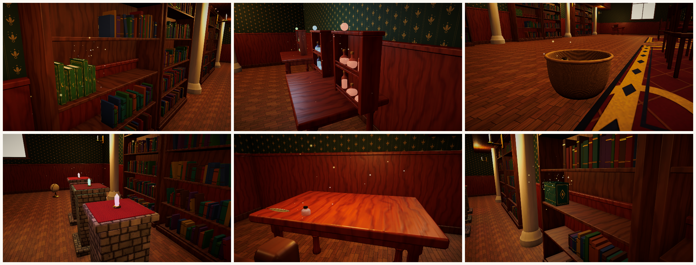

Placement, Containers & Stacking
Every place an object can go is a TidyPlacementTarget. Pick the type that matches how things should look once organised.
Choosing a target type
| Component | Looks like | Typical use |
|---|---|---|
TidySnapSlot | One exact spot | Candle holder, display pedestal, key hook |
TidySlotGroup | A grid of evenly spaced spots | Potion rack, egg box, shoe rack, toy shelf with price tags |
TidyRowZone | Objects packed side by side by real width | Bookshelves, spice racks, record crates |
TidyContainer | Grid, natural pile, or hidden contents with a fill visual | Baskets, drawers, toy chests, trash bins |
TidyFreePlacementZone | Anywhere on a surface, with optional grid and angle snapping | Desks, tables, counters |
TidyStackPoint | Objects stacked along a direction | Book stacks, crate stacks on pallets, plates |

Settings every target shares
| Group | Setting | Meaning |
|---|---|---|
| Identity | Target Id | Unique id used by objectives, hints and tutorials. |
| Display Name | Shown in prompts ("→ Spell Books"). | |
| Gizmo Color | Scene view colour. | |
| Rules | Acceptance | Which objects belong here (see rules). |
| Policy | Reject wrong objects or accept them as mistakes. | |
| Ordering / Direction | Required order of occupants. | |
| Grouping / Tag Group | Occupants must share a definition, category or tag. | |
| Completion Mode | When Full · When Required Count Reached · When All Matching Objects Placed · Never. | |
| Behaviour | Allow Removal | Players may take objects out again. |
| Lock Correct Objects | Correct objects stay put. | |
| Lock When Complete | A finished shelf cannot be disturbed. | |
| Motion | Duration, easing, arc height and landing punch of the placement animation. | |
| Setup | Initial Occupants | Objects that start inside (silently snapped at Start). Use them for partially organised rooms. |
BoxCollider for you; resize it to cover the shelf face. The Level Validator reports targets without one.Shelf rows
A TidyRowZone starts at its transform and extends along local +X for Length metres. Objects are inserted where the player aims and neighbours slide aside with a short animation. Item Euler Rotation orients every object, for example (0, 90, 0) to show book spines. A row is full when no length remains or Max Count is reached.
Slot grids and snap points
TidySlotGroup generates Columns × Rows slots with the given spacing on a vertical (shelf face) or horizontal (table) plane, or uses your own child transforms in Manual Anchors mode. With Fill In Order the next free slot is used regardless of aim, which is ideal for mobile.
TidySnapSlot is a single slot; rotate its transform to rotate what it holds.
Creating containers
| Layout | Result |
|---|---|
| Grid | Neat rows and layers inside Inner Size. |
| Pile | Deterministic natural heap with random yaw and tilt. |
| Hidden | Objects drop in and disappear. Combine with a Fill Indicator (a transform that rises) or Fill Stages (objects enabled as it fills). |
Disposal bins are containers with Consume On Place and Unlimited Capacity. Consumed objects count as resolved clutter. Create one with GameObject > Tidy Up Framework > Placement > Disposal Bin.
Stacking
A TidyStackPoint accepts only objects flagged Stackable. Configure Max Height, Spacing, Direction (local), Identical Only, Item Euler Rotation and a subtle Yaw Jitter for a hand-placed look. With Only Top Removable players lift the top item first, like a real stack.
Free placement zones
A TidyFreePlacementZone is a rectangle on a surface (Area Size in local X/Z). Objects land where the player aims, rotated with the scroll wheel or shoulder buttons and snapped to Rotation Snap Degrees. Overlap prevention keeps objects from intersecting; set Grid Snap for tidy layouts.
Placement feel
Placement uses a dependency-free tween runner (TidyTweenRunner). The default motion is a 0.32 s arc with cubic easing and a small landing punch. Increase Arc Height for a playful toss, set Landing Punch to zero for a calmer feel.
Creating custom sorting zones
Derive from TidyPlacementTarget and implement one method that returns a pose:
using TidyUpFramework.Placement;
using UnityEngine;
public sealed class TidyCircleTray : TidyPlacementTarget
{
[SerializeField] float radius = 0.3f;
[SerializeField] int seats = 8;
public override int Capacity => seats;
protected override bool TryFindPose(TidyPlacementQuery query, out Vector3 position, out Quaternion rotation, out int slotIndex)
{
slotIndex = Occupants.Count;
var angle = slotIndex * Mathf.PI * 2f / seats;
var surfacePoint = transform.TransformPoint(new Vector3(Mathf.Cos(angle), 0f, Mathf.Sin(angle)) * radius);
rotation = transform.rotation * Quaternion.Euler(0f, -angle * Mathf.Rad2Deg, 0f);
position = PivotForBottomAt(query.Object, surfacePoint, rotation);
return true;
}
}Override IsCompatible, AllowsRemoval, InsertOccupant, OnOccupantsChanged or OnPlacementCompleted for more control. Everything else (rules, events, scoring, hints, objectives) works automatically.